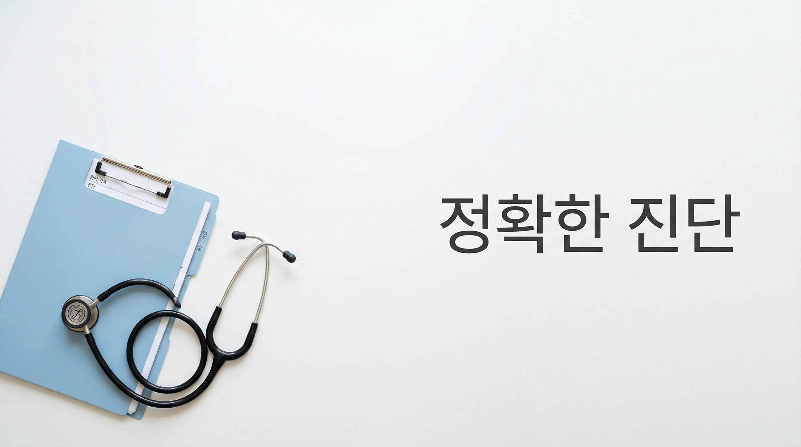

1분이면 충분합니다
달라진 장해진단서 발급 제도, 영상으로 한눈에 확인하세요.

장해진단서 제도란?
보훈병원 신체검사를 대체할 수 있는 공식 진단 문서입니다.
국가보훈 장해진단서는 보훈병원 신체검사를 대체할 수 있는 공식 진단 문서입니다. 본인이 원하면 이 진단서를 보훈관서에 제출하여 보훈병원에 가지 않고도 바로 상이등급 심사를 받을 수 있습니다.
발급기관 구성
3단계로 간편하게
장해진단서 발급부터 심사까지, 이렇게 진행됩니다.
신체검사 신청 및 대상 여부 확인
관할 보훈관서를 통해 장해진단서 발급 대상 여부를 확인하세요.
보훈관서에서 보훈심사(등록요건 심사) 결과 통보 시 또는 신체검사 신청 시 ‘장해진단서 발급대상 확인증’을 드립니다. 이 확인증을 병원에 제출하시기 바랍니다.
가까운 발급병원 방문
전국 140곳 중 가까운 병원을 방문하여 전문의에게 장해진단서를 발급받습니다.
보훈심사위원회 심사
보훈심사위원회에서는 해당 검사결과를 접수하면 관련 절차에 따라 인정 또는 기각, 등급이 산정되면 국가유공자 등급이 산정됩니다.
이렇게 좋아집니다
발급기관 확대로 보훈대상자의 의료 접근성이 크게 개선됩니다.
집 근처에서 편리하게
전국 140곳으로 확대, 먼 보훈병원까지 가지 않아도 됩니다.
시간·비용 절약
장거리 이동·교통비·숙박비 부담이 크게 줄어듭니다.
심사 기간 단축
보훈병원 신체검사 대기 없이, 등록 소요 기간이 크게 단축됩니다.
전국 어디서나
서울부터 제주까지, 모든 권역에 발급기관이 있습니다.
동일한 심사 품질
어디서 발급받든 보훈심사위원회의 최종 심사는 동일합니다.
공무원 재해보상 동시 처리
장해진단서 하나로 공무원 재해보상 절차까지 동시에 처리할 수 있습니다.
전국 어디서나, 가까운 병원에서
전국 140곳에서 장해진단서를 발급받을 수 있습니다.
광역시도별 발급기관
광역시도별 병원 목록
검색 결과에서 병원 담당 전화와 보훈관서 전화를 바로 확인하세요.
각 병원마다 발급 불가한 진료과목이 있을 수 있습니다. 방문 전 반드시 병원에 유선 확인하세요.
누가 이용할 수 있나요?
장해진단서 발급 대상과 비대상을 확인하세요.
이용 가능
- ✓전상·공상: 보훈심사위원회에서 공무 관련성을 인정받은 부상 또는 질병
- ✓고엽제후유증: 고엽제 검진에서 인정받은 질병
이용 불가
- ✗고엽제후유의증
- ✗고엽제후유증 2세 환자
- ✗생활능력이 없는 정도의 장애 판정
관할 보훈관서에 전화하여 대상 여부를 먼저 확인한 후 병원을 방문하세요.
보훈관서에서 보훈심사(등록요건 심사) 결과 통보 시 또는 신체검사 신청 시 ‘장해진단서 발급대상 확인증’을 드립니다. 이 확인증을 병원에 제출하시기 바랍니다.
자주 묻는 질문
발급 시 알아두실 사항

장해진단서 진단 전문의 현황
| 구분 | 세부항목 | 진단 전문의의 전문과목 |
|---|---|---|
| 눈의 장애 | 시력장애 시야, 결손장애 | 안과 전문의 |
| 귀의 장애 | 내이등, 청력장애 | 이비인후과 전문의 |
| 귓바퀴, 결손장애 | 이비인후과, 피부과, 성형외과 전문의 | |
| 코의 장애 | 결손장애, 비호흡 기능장애 | 이비인후과, 피부과, 성형외과 전문의 |
| 입의 장애 | 치아장애, 저작 기능장애 | 치과의사 전문의 |
| 언어 기능장애 | 재활의학과, 이비인후과, 정신건강의학과, 신경과 전문의* 언어재활사 또는 언어치료사 배치 필수 | |
| 흉터의 장애 | 흉터장애 | 피부과, 성형외과, 외과(화상의 경우) 전문의 |
| 신경계통 정신장애 | 신경계통 | 신경외과, 신경과, 재활의학과 전문의 |
| 뇌손상, 중추신경계 | 신경외과, 재활의학과, 신경과, 정신건강의학과 전문의 | |
| 말초신경병 | 재활의학과, 신경과 전문의 | |
| 파킨슨병* 비전형 파킨슨증 중 진행성 핵상마비와 다계통 위축증 포함 | 신경과, 신경외과(외과적 수술의 경우) 전문의 | |
| 복합부위통증증후군 | 마취통증의학과, 재활의학과, 신경외과(외과적 수술의 경우) 전문의 | |
| 정신계통 | 정신건강의학과, 신경과(치매) | |
| 실조·평형기능장애 | 신경과, 이비인후과 전문의 | |
| 흉복부 장기 | 호흡기질환 | 내과(호흡기분과, 알레르기분과), 흉부외과, 결핵과 전문의 |
| 심장질환 | 내과(순환기분과), 흉부외과 전문의 | |
| 신장질환 | 내과(신장분과) 전문의 | |
| 방광장애 | 내과(신장분과), 비뇨의학과 전문의 | |
| 폐암 등 악성종양 | 내과(혈액종양분과), 호흡기분과 전문의 | |
| 그 외 장기 | 내과, 외과, 비뇨의학과, 산부인과 등 해당분야 전문의 | |
| 체간의 장애 | 척추변형 기능장애 | 신경외과, 정형외과, 재활의학과 전문의* 강직성 척추염은 류마티스 내과도 가능 |
| 그 밖의 체간골 | 신경외과, 정형외과, 재활의학과 전문의 | |
| 팔(손가락) 다리(발가락) | 결손 및 기능장애 | 정형외과, 재활의학과 전문의 |
| 변형 및 단축장애 | 정형외과, 재활의학과 전문의 |
- 장해소견은 객관적 검사결과에 근거하여 현재 장해 상태를 구체적으로 기재해야 합니다.
- 의학적 소견 없이 환자 호소 증상만으로는 기재할 수 없습니다.
- 예상등급이나 상이등급 기준 문구를 직접 기재할 수 없습니다.
- 보완 자료나 추가 검사가 필요할 수 있습니다.
- 병원별 발급 불가 진료과목이 있으므로 방문 전 유선 확인 필수입니다.
- 국군수도병원은 진료 대상 여부 사전 확인이 필요합니다.